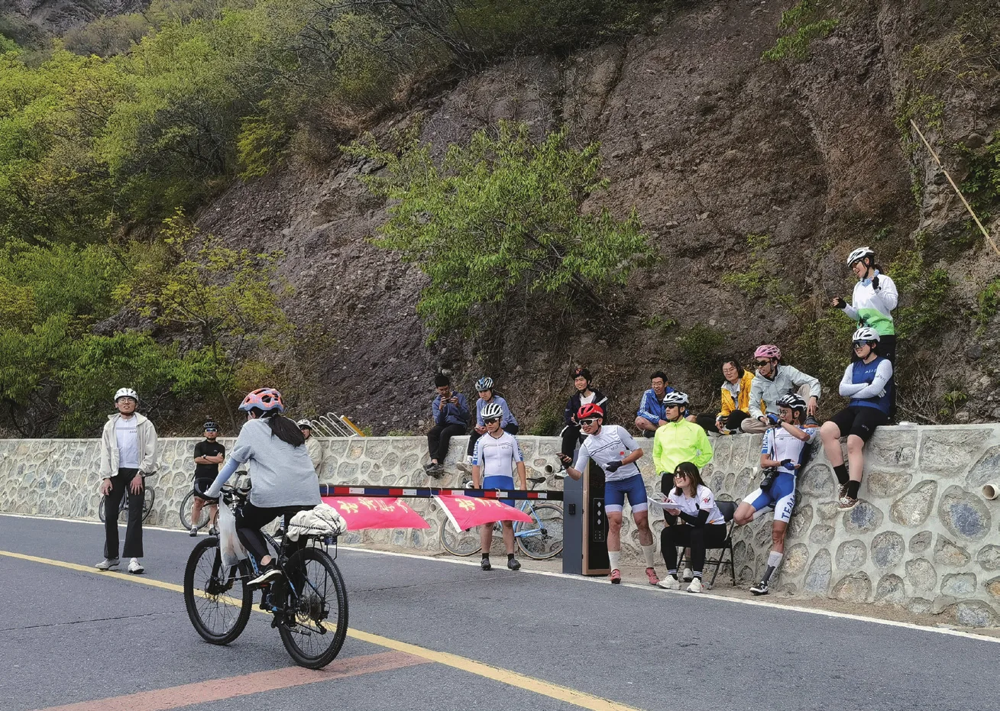
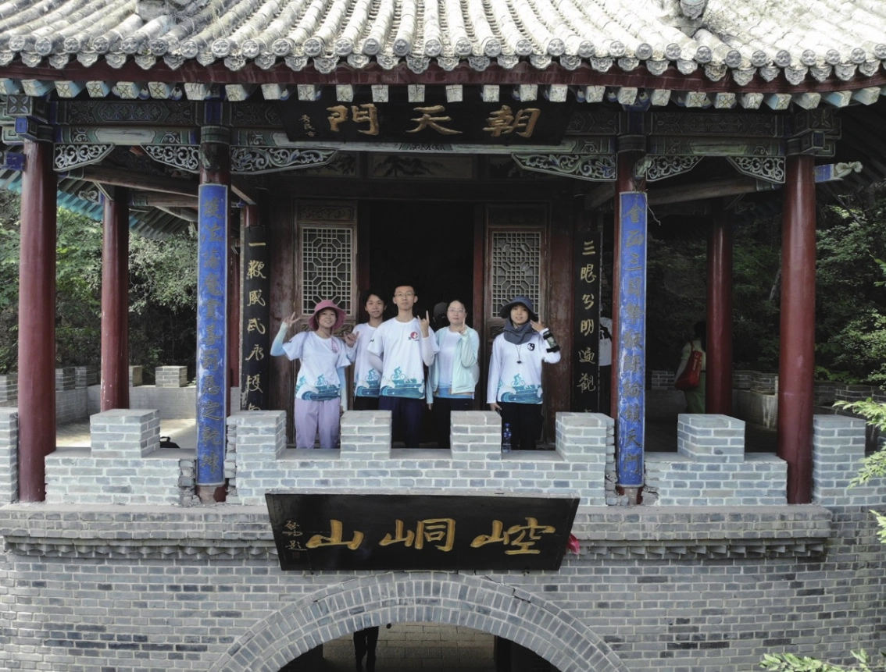
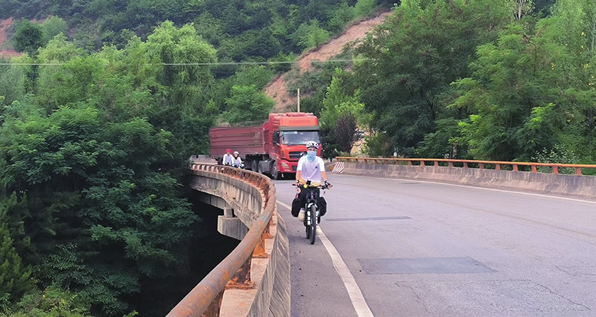

再见妙峰山
原刊112






这是我第三次协会妙峰体测，第十次站在妙峰坡顶。今天在妙峰的路上，我脑子里无数次想到一句话：“我已经走完了在协会所有的路，妙就是我的最后一次拉练。”想了很久，终于想起来是小枝的自述。
小枝是21秋季会员，交换生，在北大只有一年，在协会也只有一年，带了白河，考过了队医组，拿了秋实金奖。她在自述最后写了这句话。于我而言，大概就是：“我还完了所有的债，这就是我的最后一次拉练。”
妙峰回来我发票圈，说了却了两桩遗憾事，大概也就是“还债”的意思。除此之外，也感受到无数个“画上句号”的瞬间。周五，破风问我怎么突然想去妙峰。
我说，别人带的我可能就不去了，小满的妙峰我还是很想去做点什么，我心里有愧疚。小满新会员的那一年（21车协年），我是妙峰队长。那天刚刚下过雨，也为了保证体测状态节省体力，我想让前旗控制点速度，压在了18左右，在去程路上前旗后面堆了些人，路狭窄又有逆行，小满就摔车了，伤口严重，没去成体测。
她后来还在补测担任了发车员，也在之后单独补测通过，顺利通过春训参加了暑期远征，但21妙峰队长始终欠她一次体测。23妙峰正式后的队长讲话，她说，谢谢大家让我终于有了一次妙峰正式，声音哽咽。那个瞬间，我在她身边打着光，也有点想哭。
第二桩倒也不算主动还的债，但好歹说清了一个多年心结。我是新会员的时候，是双日南石洋队长。那时候我对拉练的理解不多，不太懂双日和大队拉练的区别，过于在意节奏，缺少对队伍整体状况的把控和对队友体验的体贴，加上六级大逆风，队伍中一位五年的老会员身体不适坐车离队了。
其实后面几年我一直知道自己那次队伍带的不太好，特别之后当了很久的文体部长，见过大大小小的拉练问题，更知道自己当时带队的问题可能给队伍里的每个人都带来了不好的体验，我也很长时间都不太愿意主动谈起这次经历。我知道我或许欠当时的每个人一句道歉，特别是坐车离队的姐姐。
但时过境迁已久，贸然开口或许也有点奇怪。23年，协会重启南石洋拉练，也是那次双日后，我第一次报名双日拉练，这次，我不再是体力充沛的暑期预备队员，体力和车况都不太好，似乎和当时的境地打了个颠倒。幸而天公还算作美，我在体力不济之外多少也能享受这次双日拉练，但身份换位，我满脑子“天道好轮回”，愈发为当年的带队懊悔。
今天在妙峰坡顶，我终于对当事人之一表达了迟到了四年的歉疚，忽然大石头放下来了。第三件事有关交流赛。今年一直开玩笑说要当“总负责鼓励师”。
从最开始决定办赛，帮总负责梳理协会做事逻辑开始，一直到现在，也有接近半年了。夜聊过不知道多少次，大大小小的事情说了很多，一直试图分担一些总负责的心理压力。总负责今天问我，“今年交流赛您这么辛苦陪我走了这么久，到底是为什么能坚持下来”。
我说我也没有做什么实际的事情呀，也就无所谓“坚持”了。不过一个原因是，21春天盛湖解不开也调和不了的结，大概也不是谁的错，只是立场不同下的误会和矛盾爆发的结果。但我想努力做点事情，偿还那些曾经无能为力的熬过的夜。
最后一件事情，大概就是今天看见坡顶车队的朋友们喊着加油迎接体测的会员们，帮忙扶车，查负重。曾经有过一段彼此误会隔阂的时期，感谢交流赛，感谢真诚地为之努力的所有人，终于能够再次听见“车协和车队是一家人”。有感情、有心结的时候，说再见也总归依依不舍，总会出现那种“一遍遍说告别一遍遍又回来”的喜剧效果；而今一笑过往皆作烟云，而妙峰山路仍然盘旋曲折，而春末夏初仍然蒸腾着期待和紧张的温度。
大概所有的纠结都已散尽，或许这就是告别。祝大家拥有灿烂的夏天！2023.5.7